Europe snow by country snow report by country
Europe snow by country snow report by country: every SnowScope report, newest first. Each report is dated and uses that day's snow map, forecast and measuring stations.
Snow reports · Europe snow by country


Bulgaria's mountains face significant snowfall in the next 7 days, with a peak of 10 cm on 28 November. Snow depth today is 1–9 cm at ski resorts; the Rila Mountains lead with 7 cm in 72 hours.
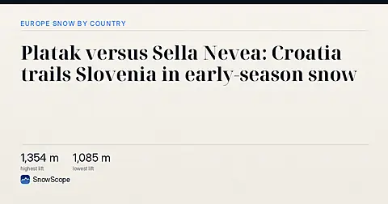
Croatia has 3 cm at Platak on 22 November; Slovenia's Sella Nevea holds 42 cm. Both countries face a thaw before the week's main snow event.
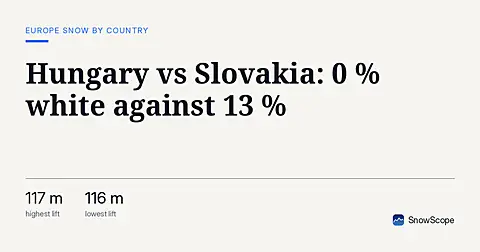
Hungary has no snow cover on 22 November, while Slovakia shows 13 %. The week ahead brings up to 8 cm, with the best chance on 26 November.

Snow covers 25% of Romania today as the winter season begins. The snow line is at 1,200 m, with 99% cover above 2,000 m. Data from 22 November 2026.
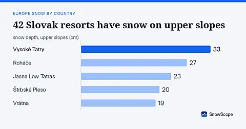
42 of 107 resorts in Slovakia show snow cover today. Vysoké Tatry leads with 33 cm at the summit as the season builds.

Sweden's snow cover stands at 314,500 km² on 22 November. SnowScope shows 2 cm in week one, then 12 cm in week two, with mountain peaks already holding 66 cm.

Kosovo's mountains face major snowfall ahead. SnowScope shows up to 65 cm in the next 7 days, with 19 cm expected on 28 November. Data from 22 November.
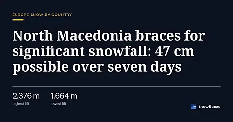
A major snow event is forecast for North Macedonia over the next week, with up to 47 cm expected by 2026-11-29. The heaviest falls arrive tomorrow.

Riksgränsen holds 54 cm on 22 November, tracking closely with the 63 cm typical for this date. Snow covers 94% of Norway's mountains.

Poland has 1,080 km² of snow on 22 November. Above 1,000 m almost all slopes are white; below, they are mostly bare.

Slovenia's mountains gained 1880 km² of snow cover in three days. The Julian Alps saw the most fall, with 40 cm, while lower ranges stayed dry.

Kallin holds 11 cm at 40 m on 22 November, nearly double its normal depth. Best snow arrives in weeks 9–11 (early to mid-March).

72-hour snowfall mapped across Ukrainian ranges: Chornohora led with 24 cm, Gorgany 19 cm, Borzhava 14 cm. Data from 2026-11-22.

German snow cover jumped from 5,460 to 10,730 km² in a week. The Allgäu Alps lead with 47 cm of fresh snow in 72 hours as of 22 November.

Austria gained 11,600 km² of snow in seven days. Stubaier Gletscher leads with 67 cm. Data from 22 November 2026.

Swiss Alps covered 71 percent white versus 18 percent in France as of 22 November. Valais holds 166 cm in 72 hours.

La Grave has 171 cm of snow, far ahead of the typical 82 cm for late November. France's Alps gained 90 cm in 72 hours as of 22 November.

Italy has 101 cm at La Thuile ski on 22 November, three times the normal depth for this date. The Aosta Valley led with 242 cm in 72 hours.

Fresh snow is filling Albania's high mountains fast. Up to 34 cm is forecast in the next week, with 16 cm expected on Monday 23 November.

Czechia's white cover fell from 1,780 km² to 620 km² in seven days. Snow above 1,200 m offers the best chance for skiing on 21 November.

77% of Finland's mapped high ground is snow-covered on 21 November. The snow line divides the country: continuous runs above 500 m, patchy terrain below.

Fresh snow fell unevenly across Polish mountains in 72 hours to 21 November. The Tatras lead with 21 cm; lower ranges collected less.
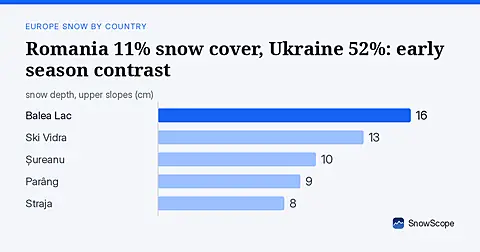
Romania's snow cover stands at 11% on 21 November, while Ukraine holds 52%. Fresh snow is building across Romanian peaks ahead of a 13 cm event on 23 November.

Ukraine saw snow cover jump from 6,040 to 9,120 km² in seven days. Драгобрат leads with 17 cm depth; heavy snow forecast through November.

Slovakia has 2,680 km² under snow after 17 cm of fresh snow in 72 hours, far outpacing Czechia. Data from 21 November 2026.

Fresh snow fell unevenly across Germany in the past 72 hours: 39 cm in the Allgäu Alps, 31 cm in the Bavarian Alps, 16 cm in the Black Forest. Data from 2026-11-21.

Riksgränsen holds 167 cm today. SnowScope shows late March and mid-April are usually the snowiest weeks. Next seven days: up to 26 cm possible.

Snow-covered area fell from 3,570 km² to 330 km² in one week. Only the highest peaks above 2,000 m hold snow as of 21 November.

Björkliden has 138 cm today. Sweden averaged 95 cm across measured resorts. Snow depth peaks in mid-April (weeks 14–15). Data from 21 November 2026.
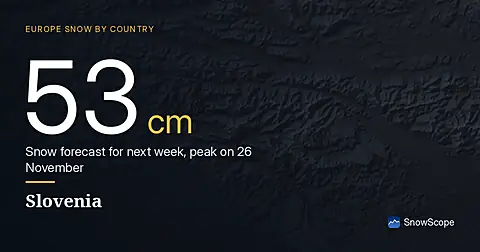
Slovenia faces major snowfall over the next 7 days, with up to 53 cm expected. The heaviest falls arrive on 26 November. Data from 21 November.

Orelle sits at 74 cm on 21 November, matching the seasonal average of 64 cm. France has 12,530 km² of snow cover as fresh storms arrive.

Austria has snow across 56 percent of measured terrain on 21 November, far ahead of Germany at 7 percent. Vorarlberg received 47 cm in three days.

164 Italian resorts have snow today. Pfelders leads with 118 cm on upper slopes. Up to 55 cm fell in three days.

Switzerland's white ground grew by 6,410 km² in one week. Latest snow the forecast shows 19,880 km² covered as of 21 November.
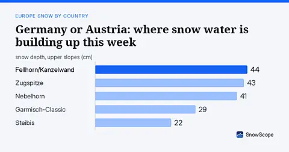
Germany has 1790 km2 of snow cover on 20 November, Austria leads with 44 percent white cover. The Allgäu Alps received 34 cm in 72 hours.

Montenegro's mountains could see 31 cm of snow in the week ahead, with 24 cm forecast for Thursday 26 November. Data from 20 November.
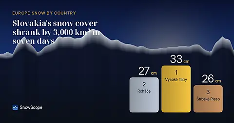
Slovakia lost 2,980 km² of snow cover in a week. High peaks still hold 17-28 cm, but lower slopes are bare. As of 20 November.

Sweden's snow cover reaches from sea level across 90 percent of the mapped area on November 20. Heights above 1000 m hold 42 cm average depth.

Romania gained 2,090 km² of snow cover in seven days. By 20 November, 4,000 km² lay under snow across the mountains, with new falls expected to push totals higher.

Slovenia lost nearly 600 km² of snow cover in seven days. Only 600 km² remain white as of 20 November, but high peaks still have good depth.

130 French resorts now have snow cover on 20 November. The Mont Blanc massif has received 297 cm in three days, with more expected.

Vorarlberg received the most new snow in Austria over three days to 20 November. Up to 26 cm fell across large areas as a storm moved through the Alps.
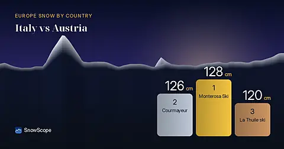
Italy shows 22 % snow cover on 20 November against Austria's 44 %. Monterosa Ski leads at 128 cm as fresh snow keeps falling.

Glacier 3000 leads Switzerland with 124 cm after 128 cm of snow in 72 hours. Snow cover jumped to 64% across the country on 20 November.

Poland has snow on 3% of ski terrain today while Czechia has none. Karpacz leads with 45 cm, but cover is melting fast across both countries.

Heavy snow is forecast for Ukraine's mountains over the next 7 days, with up to 28 cm expected. Data from 2026-11-19.

No snow yet on 19 November, but up to 31 cm is forecast across the week ahead. Thursday 26 November brings the heaviest fall at 27 cm.

Fresh snow fell unevenly across Slovakia in the past three days. The High Tatras and Low Tatras each gained 24 cm, while lower slopes saw little. Data from 19 November.

UK has 10% snow cover with 16 cm at Nevis Range; Norway reaches 89% with 167 cm at Riksgränsen. Data from 19 November.

On 19 November, 142 Norwegian resorts have snow on upper slopes. Riksgränsen leads with 167 cm; 89% of high ground is white.

Spain has snow on 0.3% of its high mountains today, far behind France's 13%. The Spanish Pyrenees got 26 cm in 72 hours. Data from 19 November.
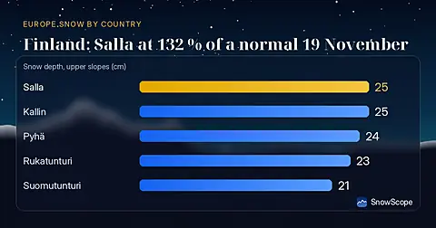
Salla leads Finland with 25 cm on 19 November, 6 cm above the normal depth for this date. Snow cover grew sharply across the country in the past week.
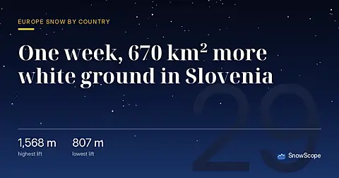
Snow cover jumped from 90 km² to 760 km² in seven days. Fresh snow peaked at 30 cm in the high mountains on 19 November.

Austria's snow cover jumped to 48 percent this week. A significant storm arrives 23 November, with up to 55 cm forecast over the next week.

11 Romanian ski resorts have snow cover on 19 November, with the best depths above 2000 m. Fresh snow forecast up to 14 cm by 23 November.

France's snow-covered area grew from 6,040 km² to 11,870 km² in a week. The Mont Blanc massif received 240 cm in 72 hours by November 19.

Fresh snow hit Italy's high ranges hard. The Aosta Valley received 215 cm in 72 hours; the Piedmont Alps got 76 cm. Data from 19 November.

Zugspitze leads German resorts with 53 cm on 19 November. Snow cover is growing; 38 cm possible in the next week.

Swiss snow depths on 19 November are well above normal. Glacier 3000 holds 60 cm, more than twice the typical depth for this date. Next week brings up to 125 cm more.

German mountains face significant snow arrival over seven days, with up to 29 cm possible. Data from 18 November.

Romania's mountains will see up to 25 cm of new snow in the next 7 days, with 12 cm expected on 23 November. Snow depth and forecast as of 18 November.

Fresh snow fell unevenly across the UK hills in the past 72 hours. The Southern Uplands received the most, while cover above 1000 m is now complete. Data from 18 November.
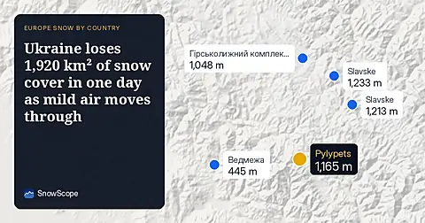
A sudden thaw on 18 November removed most of Ukraine's snow cover in 24 hours. Only 430 km² remained, down from 2,350 km² yesterday. New snow is forecast.

Mild weather erased nearly 490 km² of snow cover across Slovakia on 18 November. The High Tatras still hold 17 cm of new snow from the past 72 hours.

27 of Finland's 67 resorts have snow on 18 November. Upper slopes above 1000 m hold 41 cm on average across the country.

Sweden has snow on 83% of high ground; Finland 55%. Sweden's best resort holds 140 cm, Finland's 26 cm. Data from 18 November.

Austria's glacier resorts lead the country after 14 cm fell in the last 72 hours. Snow cover grew to 18,140 km² as of 18 November.
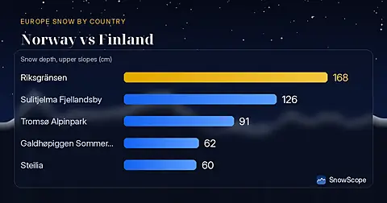
Norway has 89 % snow cover across 249,960 km² on 18 November, while Finland sits at 55 %. Riksgränsen leads with 168 cm.

Fresh snow fell across France's high mountains in the past 72 hours. The Mont Blanc massif received the most: 180 cm. Data from 2026-11-18.

26 Polish resorts have snow today, with Karpacz leading at 46 cm. SnowScope data for 18 November 2026.
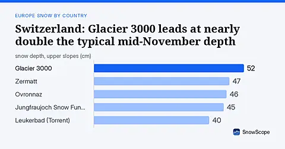
Swiss ski areas are running 142% of normal snow cover for November 18. Glacier 3000 tops the ranking with 52 cm, ahead of major storms forecast.

Italy faces a major snow event: up to 95 cm is forecast for the next 7 days, with 34 cm expected on Friday 20 November. Data from 18 November.

Snow covers only 20 km² of Montenegro on 17 November. The snow line sits at 2,200 m; only Ski centar Savin kuk has skiable depth.

Serbia has 30 km² of snow cover on 17 November. Only Avantura park holds 3 cm. Up to 8 cm is forecast for the week ahead, with 6 cm possible on 23 November.

Croatia snow today, 17 November: snow cover, new snow, snow depth by height, the next days and the best resorts.

Snow covers 20 km² across Bosnia and Herzegovina on 17 November. Expect 15 cm in the next week, with 11 cm possible on 23 November.

Albania has 60 km² of snow cover on 17 November. The snow line sits at 2,200 m; only the highest peaks hold any white.

50 km² of snow cover in North Macedonia on 17 November, with up to 6 cm forecast for 23 November. Ski areas still waiting.

Austria is behind: Kühtai has 20 cm, a normal 17 November has 33 cm. Snow cover, new snow, resorts and the days ahead in Austria on 17 November.

Thaw in Bulgaria: 330 km² of snow cover gone in a day. Snow cover, new snow, resorts and the days ahead in Bulgaria on 17 November.

Finland or Sweden? Where the snow is better on 17 November. Snow cover, new snow, resorts and the days ahead in Finland on 17 November.
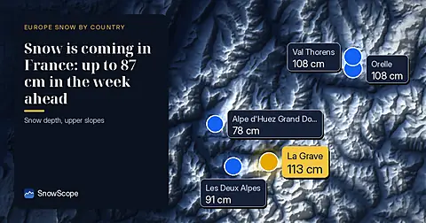
Snow is coming in France: up to 87 cm in the week ahead. Snow cover, new snow, resorts and the days ahead in France on 17 November.

Rapid snow loss across Italy on 17 November as temperatures rise. Only 12,540 km² remains covered, down from 21,210 km² yesterday. The Aosta Valley saw 134 cm of new snow in 72 hours.

Norway's snow cover is growing fast. Up to 39 cm of new snow is forecast over the next seven days, with the heaviest fall on November 20.

Poland's snow-covered area shrank from 1,300 to 710 km² in a week. Karpacz holds the deepest snow at 36 cm as of 17 November.

Mild day in Romania: the snow retreats to 1,700 m. Snow cover, new snow, resorts and the days ahead in Romania on 17 November.

Slovakia's snow cover dropped to 1,830 km2 today. Snow sits mostly above 1,200 m; the High Tatras and Low Tatras lead with 8 cm of new snow in 72 hours.

79% of Sweden's ski areas show snow today. Upper slopes at Björkliden and Abisko carry 131 cm. The Hemavan fjells led the past 72 hours with 15 cm of fresh snow.

Fresh snow fell unevenly across Swiss mountains. The Valais Alps received 92 cm in three days; the Bernese Oberland 54 cm. Data from 17 November.
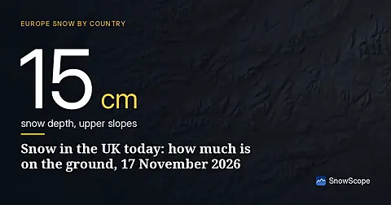
UK gained 8,380 km² of snow cover by 17 November. The North Pennines led with 27 cm in 72 hours.

Ukraine's snow cover dropped to 6% today as the Carpathians melt back. Poland holds twice the white share. Both countries face fresh snow by Friday.

Two-week snow outlook in Andorra: 13 cm and 21 cm. Snow cover, new snow, resorts and the days ahead in Andorra on 17 November.

Only 22 of 170 Czech ski areas show snow cover on 17 November. The Jeseníky and Krkonoše lead with 9 cm and 8 cm in 72 hours. More snow arrives from 20 November.
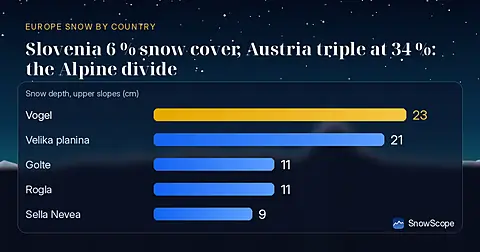
Slovenia has only 6 % white cover today against Austria's 34 %. Fresh snow in the Julian Alps offers the best chance for early season runs. Data from 17 November.

The snow is shrinking in Germany: 840 km² gone since last week. Snow cover, new snow, resorts and the days ahead in Germany on 17 November.

Kosovo snow today, 17 November: snow cover, new snow, snow depth by height, the next days and the best resorts.

Albania forecasts 9 cm of snow rising to 22 cm over two weeks, based on our model from November 16.

On 16 November, Andorra has snow cover on just 2 % of its area while France climbs to 11 %; the gap reflects autumn patterns, with deeper falls forecast next week.
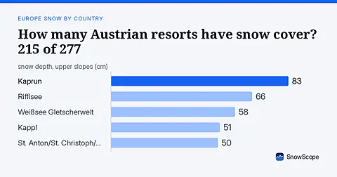
215 of 277 Austrian ski resorts have early-season snow on 16 November. The snow line sits at 1500 metres; expect 50 cm in the next week.

Thaw in Bosnia and Herzegovina: 600 km² of snow cover gone in a day
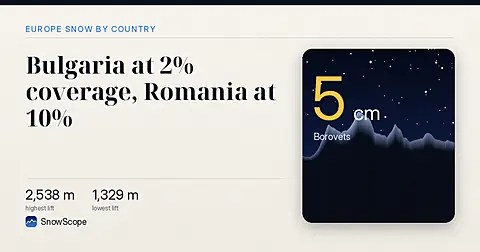
Bulgaria covers just 2% in white with 5 cm at Borovets on its first snow day, while Romania shows 10%, measured 2026-11-16

Mild conditions erased 950 km2 of snow across Croatia on 16 November. Only 880 km2 remains, mostly above 1,500 m. Next snow arrives 21 November.

Thaw has shrunk Czechia's snow cover from 1,250 km² to 720 km² in one day. Measured 16 November. Fresh snow arrives 17 November.

Finland gained 138,530 km² of snow cover in a week, reaching 157,360 km² as the season opened. Data from 16 November 2026.

France or Switzerland? Where the snow is better on 16 November. Snow cover, new snow, resorts and the days ahead in France on 16 November.

German Alps show just 43% of normal snow depth across tracked resorts on 16 November, well behind schedule as the season opens.

Greek mountains have only 10 km² of snow cover on 16 November. The first real snow arrives around 21 November, but resorts stay bare for now.

Hungary snow today, 16 November: snow cover, new snow, snow depth by height, the next days and the best resorts.

Ireland has 0 cm of snow across its mountains on 16 November. Early-season conditions remain dry; check back in winter.

Monterosa Ski holds 99 cm, 38% above normal for mid-November, as Italian Alps gain early snow on 16 November.

Kosovo's two-week snow outlook: 7 cm by November 23 and up to 18 cm from November 24-30, based on satellite data as of November 16.

SnowScope shows 11 cm in the next week and 22 cm Nov 24-30. Data from 16 Nov.

North Macedonia's mountains will see modest snow this week, then heavier falls next week. Data from 16 November.

Fresh snow from a three-day storm peaked at 76 cm in Jotunheimen and 74 cm in Hardangervidda, Norway's high ranges, on 16 November.

Rapid thaw removed nearly 44% of Poland's snow cover on 16 November. Only 1,170 km² remains white, with recovery expected from 17 November.
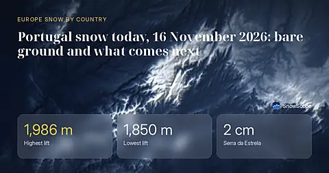
No snow covers Portugal's ski mountains on 16 November. The first flakes arrive late next week, with up to 1 cm by 23 November.

Snow coverage in Romania dropped from 12,900 km² to 6,630 km² in a week, but peaks above 1,500 m keep their white cover as of 16 November.